Se encuentra en la región de la torre del bosque, y es el primer santuario que verás al entrar en el Bosque Kolog. Está en el centro de él, muy cerca del Gran Árbol Deku, y es aconsejable que lo actives para tener un punto de teletransporte nada más llegar a esta zona. Puedes entrar sin ningún requisito previo.
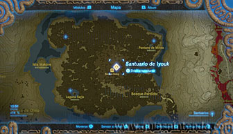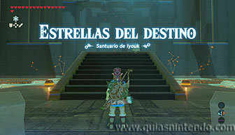
El objetivo de este santuario es algo difícil de entender, pero la clave está en las constelaciones que puedes ver frente a ti (sobre la reja que debes abrir) y las filas de agujeros señalados por unas luces (hay cinco luces, es decir, cinco posiciones en cada fila).
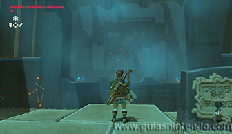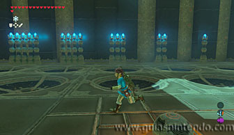
Debes colocar una esfera en cada fila que indique el número de veces que aparece una determinada constelación (en la pared frontal, delante del primer agujero de cada fila tienes el dibujo de la constelación que debes contar).
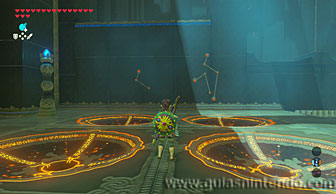
Como la primera constelación (que corresponde a la primera fila de la izquierda)
aparece 5 veces, tienes que poner la esfera en la quinta posición. La constelación
que corresponde, por su dibujo, a la segunda fila, aparece 3 veces, por lo tanto, deberías poner
la esfera en la tercera posición de la segunda fila.
En cuanto a las filas del lado derecho, tienes que poner la esfera en la primera
posición de la primera fila. La última esfera debe ir en la segunda
posición de la última fila tal como se ve en las siguientes fotos. Así
abrirás la puerta para llegar al santuario.
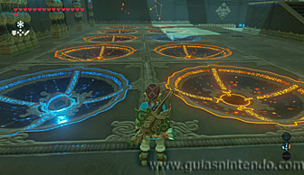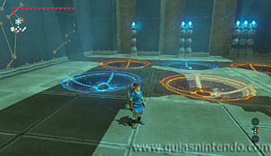
Si quieres coger un cofre antes de salir, debes mirar atrás para ver otro dibujo en la pared con
constelaciones. Siguiendo el mismo procedimiento que con la anterior deberías colocar ahora las
esferas de este modo:
Primera fila, esfera en la cuarta posición.
Segunda fila, segunda posición.
Tercera fila (primera del lado derecho), esfera en la segunda posición.
Cuarta fila (última a la derecha), esfera en la primera posición.
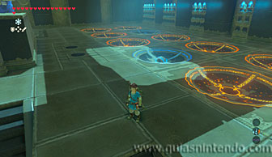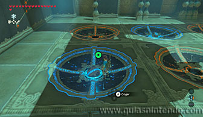
Al moverlas a esta posición se abrirá la reja que te permite coger el cofre (con un mandoble real)
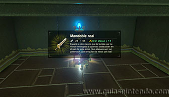
Cuando llegues al altar del santuario podrás examinarlo para obtener un símbolo de valía.
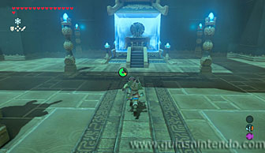